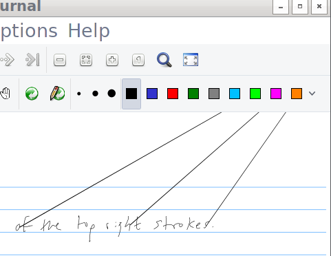

I run Arch Linux on all of my computers (except the tragedy of the 12" Macbook) so using Windows on my Surface 3 created issues. Mostly, it was hard to view and edit OneNote files across my devices. I wanted to use Xournal, an open-source note-taking app, which runs natively on GNU/Linux.
Here are the steps I followed to get Arch up and running:
First, to get some disk space to install Linux, shrink the Windows partition by:
It's likely that Windows will tell you that there isn't enough disk space available to shrink more than 2GB. I tried each of these until the available disk space reflected the actual disk usage:
powercfg /h off.defrag C: /X /H.Secure Boot verifies the boot loader against a local list of approved kernels before booting. Naturally, our to-be-installed Linux kernel is not approved and thus will not boot. Temporarily disable Secure Boot by:
Follow the wiki instructions to install Arch using a USB drive.
fdisk -l should indicate the Windows partition.The Linux kernel has improved its Surface 3 support incrementally over the last few years. For full hardware support, install the latest Linux kernel with some proposed Surface 3 patches. The included patches add a battery driver, support for lid status and backlight control, and improve the stability of the wireless driver.
In order to avoid the new kernel being blocked by Secure Boot, we must register its hash the Surface's database. Follow the PreLoader instructions to install a hash tool that can add the hash of the just-installed Linux kernel to the database. Be sure to use the signed PreLoader.efi and HashTool.efi.
If successful, the installation should provide a screen that allows you to enroll the hash of the new kernel.
After enrolling the hash, re-enable Secure Boot in the BIOS.
Some configuration is needed to reach reasonable defaults for the Surface 3 hardware.
The Type Cover, touchscreen, touchpad, and pen all work great using the libinput driver. Only the pen needs some configuration so that libinput is used. Utilize an input config in xorg.conf.d to force the pen to use the libinput driver.
Section "InputClass"
Identifier "Surface Pen"
MatchProduct "Surface3 SPI Pen Input"
MatchDevicePath "/dev/input/event*"
Driver "libinput"
EndSection
Any customizations to the keyboard layout or repeat rate will be lost upon detaching and reattaching the Type Cover if they are made by setxkbmap and xset r. The keyboard layout configuration will be reapplied if made using a configuration file in xorg.conf.d.
Section "InputClass"
Identifier "seyboard"
MatchIsKeyboard "on"
Option "XkbLayout" "us_prog"
Option "XKbOptions" "ctrl:nocaps"
EndSection
The repeat rate will be reapplied if set when invoking X to run the X server. For example, use startx -- -ardelay 250 -arinterval 20 vt1 in your .bashrc or .zshrc.
Change the backlight brightness with xbacklight -set 10.
The high-pixel density display on the Surface 3 will make some applications look small. Follow the HiDPI instructions to configure your applications for the HiDPI display.
Utilizing the Surface 3 as a laptop does not require special software, but with the lack of a keyboard in tablet mode some additions are necessary.
Xournal needs some configuration to behave like OneNote. In particular, to drag the page with your finger but still use the pen to write requires enabling 'Touchscreen as Hand Tool' and setting the touchscreen device to 'Surface3 SPI Capacitive TouchScreen'.
Occasionally, I see phantom strokes in the top-right corner that add unwanted outbursts to my note. (This is very common when using the evdev driver but not as often with libinput).

A temporary, hacky fix is to ignore stokes with an unusually large hypotenuse.
For a touch keyboard, I've found onboard to work well.
To switch applications without the keyboard, the skippy-xd application emulates the Mac OS X exposé feature. A switch can be activated using a hardware button such as Volume-Up with xbindkeys.
Arbitrary commands and actions can be executed with pen gestures through easystroke. This includes interaction with the window manager or X using automation tools such as wmctrl, xdotool, and xte.
These features do not work in Linux:
These features I haven't tested:
Patches are welcome!
This setup makes my Surface 3 work great as a pen and paper replacement and as a tablet for PDF reading! With Wi-Fi turned off, I get up to 13 hours battery life and up to 9 with it on.
I hope this post might be useful for someone else trying to run Arch on their Surface 3!
Much of the hardware support for the Surface 3 was added by: